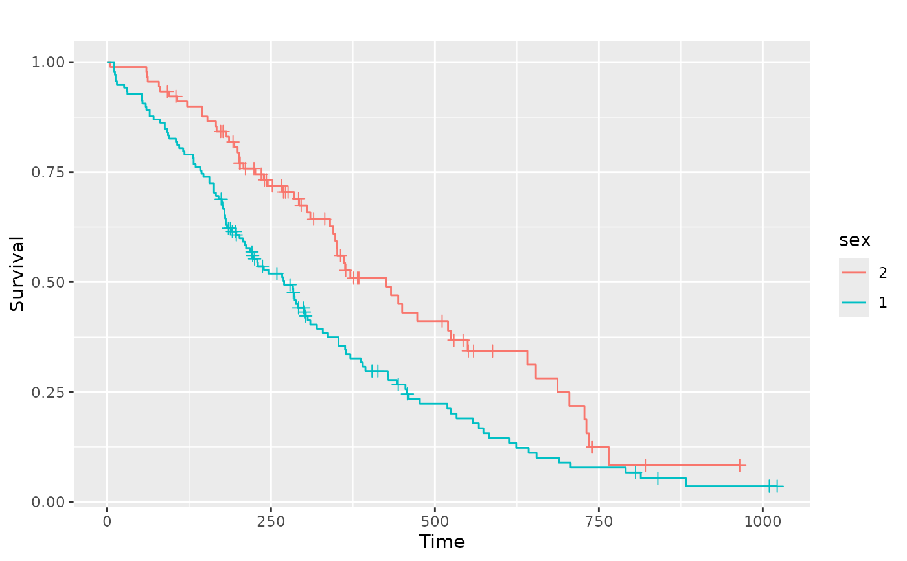
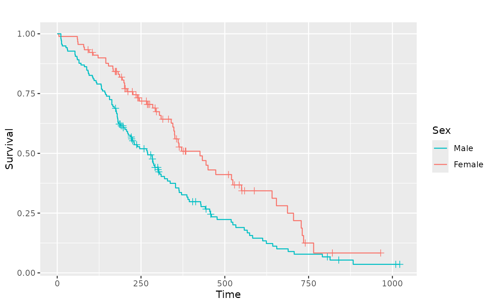
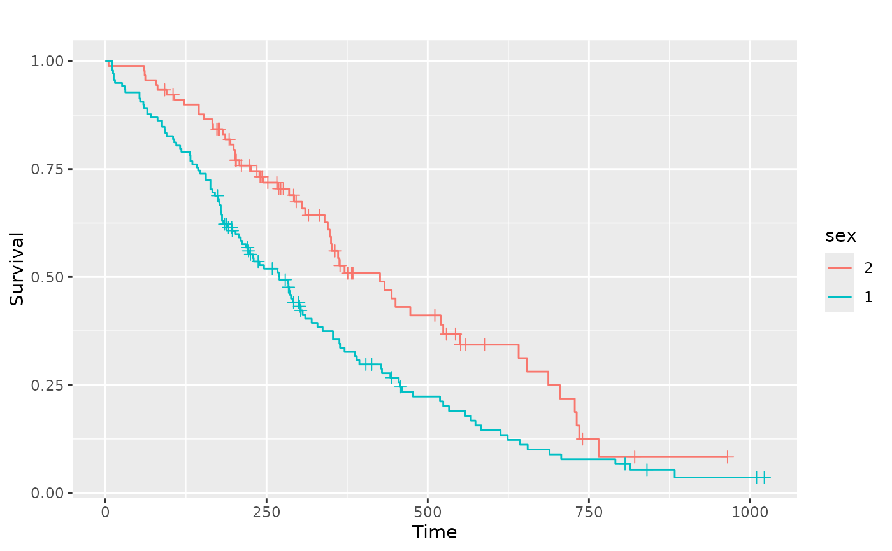
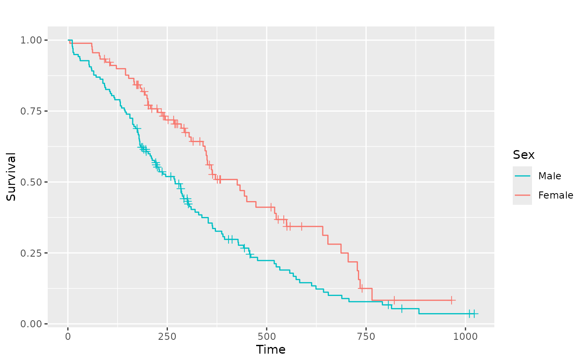

This function produces Kaplan-Meier plots using ggplot2.
As a first argument it needs a survfit object, created by the
survival package. Default settings differ for single stratum and
multiple strata objects.
Usage
ggsurv(
s,
CI = "def",
plot.cens = TRUE,
surv.col = "gg.def",
cens.col = "gg.def",
lty.est = 1,
lty.ci = 2,
size.est = 0.5,
size.ci = size.est,
cens.size = 2,
cens.shape = 3,
back.white = FALSE,
xlab = "Time",
ylab = "Survival",
main = "",
order.legend = TRUE
)Arguments
- s
an object of class
survfit- CI
should a confidence interval be plotted? Defaults to
TRUEfor single stratum objects andFALSEfor multiple strata objects.- plot.cens
mark the censored observations?
- surv.col
colour of the survival estimate. Defaults to black for one stratum, and to the default ggplot2 colours for multiple strata. Length of vector with colour names should be either 1 or equal to the number of strata.
- cens.col
colour of the points that mark censored observations.
- lty.est
linetype of the survival curve(s). Vector length should be either 1 or equal to the number of strata.
- lty.ci
linetype of the bounds that mark the 95% CI.
- size.est
line width of the survival curve
- size.ci
line width of the 95% CI
- cens.size
point size of the censoring points
- cens.shape
shape of the points that mark censored observations.
- back.white
if TRUE the background will not be the default grey of
ggplot2but will be white with borders around the plot.- xlab
the label of the x-axis.
- ylab
the label of the y-axis.
- main
the plot label.
- order.legend
boolean to determine if the legend display should be ordered by final survival time
Examples
# Small function to display plots only if it's interactive
p_ <- GGally::print_if_interactive
if (require(survival) && require(scales)) {
lung <- survival::lung
sf.lung <- survival::survfit(Surv(time, status) ~ 1, data = lung)
p_(ggsurv(sf.lung))
# Multiple strata examples
sf.sex <- survival::survfit(Surv(time, status) ~ sex, data = lung)
pl.sex <- ggsurv(sf.sex)
p_(pl.sex)
# Adjusting the legend of the ggsurv fit
p_(pl.sex +
ggplot2::guides(linetype = "none") +
ggplot2::scale_colour_discrete(
name = "Sex",
breaks = c(1, 2),
labels = c("Male", "Female")
))
# Multiple factors
lung2 <- dplyr::mutate(lung, older = as.factor(age > 60))
sf.sex2 <- survival::survfit(Surv(time, status) ~ sex + older, data = lung2)
pl.sex2 <- ggsurv(sf.sex2)
p_(pl.sex2)
# Change legend title
p_(pl.sex2 + labs(color = "New Title", linetype = "New Title"))
# We can still adjust the plot after fitting
kidney <- survival::kidney
sf.kid <- survival::survfit(Surv(time, status) ~ disease, data = kidney)
pl.kid <- ggsurv(sf.kid, plot.cens = FALSE)
p_(pl.kid)
# Zoom in to first 80 days
p_(pl.kid + ggplot2::coord_cartesian(xlim = c(0, 80), ylim = c(0.45, 1)))
# Add the diseases names to the plot and remove legend
p_(pl.kid +
ggplot2::annotate(
"text",
label = c("PKD", "Other", "GN", "AN"),
x = c(90, 125, 5, 60),
y = c(0.8, 0.65, 0.55, 0.30),
size = 5,
colour = scales::pal_hue(
h = c(0, 360) + 15,
c = 100,
l = 65,
h.start = 0,
direction = 1
)(4)
) +
ggplot2::guides(color = "none", linetype = "none"))
}
#> Loading required package: survival
#> Loading required package: scales
 
#> Scale for colour is already present.
#> Adding another scale for colour, which will replace the existing scale.


#> Scale for colour is already present.
#> Adding another scale for colour, which will replace the existing scale.
